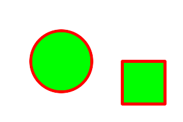

Drawable provides a convenient interface for preparing vector, image, or text arguments for the Image::draw() method. Each instance of a Drawable sub-class represents a single drawable object. Drawable objects may be drawn "one-by-one" via multiple invocations of the Image draw() method, or may be drawn "all-at-once" by passing a list of Drawable objects to the Image draw() method. The one-by-one approach is convenient for simple drawings, while the list-based approach is appropriate for drawings which require more sophistication.
The following is an example using the Drawable subclasses with a one-by-one approach to draw the following figure:

Since Drawable is an object it may be saved in an array or a list for later (perhaps repeated) use. The following example shows how to draw the same figure using the list-based approach:
Drawable depends on the simple Coordinate structure which represents a pair of x,y coodinates. The methods provided by the Coordinate structure are shown in the following table:
Coordinate Structure Methods
|
Method/Member |
Signature |
Description |
|---|---|---|
|
Coordinate |
void |
Default Constructor |
|
double x_, double y_ |
Constructor, setting first & second | |
|
x |
double x_ |
x coordinate member |
|
y |
double y_ |
y coordinate member |
The Drawable classes are shown in the following table. Only constructor signatures are documented here. Each Drawable class also provides methods by which each individual parameter may be adjusted.
Drawable Classes
|
Sub-Class |
Constructor Signature |
Description |
|---|---|---|
|
DrawableAffine |
double sx_, double sy_, double rx_, double ry_, double tx_, double ty_ |
Specify a transformation matrix to adjust scaling, rotation, and translation (coordinate transformation) for subsequently drawn objects in the same or decendent drawing context. The sx_ & sy_ parameters represent the x & y scale factors, the rx_ & ry_ parameters represent the x & y rotation, and the tx_ & ty_ parameters represent the x & y translation. |
|
void |
Specify a transformation matrix to adjust scaling, rotation, and translation (coordinate transformation) for subsequently drawn objects in the same or decendent drawing context. Initialized to unity (no effect) affine values. Use class methods (not currently documented) to adjust individual parameters from their unity values. | |
|
DrawableAngle |
double angle_ |
Set drawing angle |
|
DrawableArc |
double startX_, double startY_, double endX_, double endY_, double startDegrees, double endDegrees_ |
Draw an arc using the stroke color and based on the circle starting at coordinates startX_,startY_, and ending with coordinates endX_,endY_, and bounded by the rotational arc startDegrees_,endDegrees_ |
|
DrawableBezier |
const std::list<Magick::Coordinate> &coordinates_ |
Draw a bezier curve using the stroke color and based on the coordinates specified by the coordinates_ list. |
|
DrawableClipPath |
const std::string &id_ |
Select a drawing clip path matching id_. |
|
DrawableCircle |
double originX_, double originY_, double perimX_, double perimY_ |
Draw a circle using the stroke color and thickness using specified origin and perimeter coordinates. If a fill color is specified, then the object is filled. |
|
DrawableColor |
double x_, double y_, PaintMethod paintMethod_ |
Color image according to paintMethod. The point method recolors the target pixel. The replace method recolors any pixel that matches the color of the target pixel. Floodfill recolors any pixel that matches the color of the target pixel and is a neighbor, whereas filltoborder recolors any neighbor pixel that is not the border color. Finally, reset recolors all pixels. |
|
DrawableCompositeImage |
double x_, double y_, const std::string &filename_ |
Composite current image with contents of specified image, at specified coordinates. If the matte attribute is set to true, then the image composition will consider an alpha channel, or transparency, present in the image file so that non-opaque portions allow part (or all) of the composite image to show through. |
|
double x_, double y_, const Image &image_ | ||
|
double x_, double y_, double width_, double height_, const std::string &filename_ |
Composite current image with contents of specified image, rendered with specified width and height, at specified coordinates. If the matte attribute is set to true, then the image composition will consider an alpha channel, or transparency, present in the image file so that non-opaque portions allow part (or all) of the composite image to show through. If the specified width or height is zero, then the image is composited at its natural size, without enlargement or reduction. | |
|
double x_, double y_, double width_, double height_, const Image &image_ | ||
|
double x_, double y_, double width_, double height_, const std::string &filename_, CompositeOperator composition_ |
Composite current image with contents of specified image, rendered with specified width and height, using specified composition algorithm, at specified coordinates. If the matte attribute is set to true, then the image composition will consider an alpha channel, or transparency, present in the image file so that non-opaque portions allow part (or all) of the composite image to show through. If the specified width or height is zero, then the image is composited at its natural size, without enlargement or reduction. | |
|
double x_, double y_, double width_, double height_, const Image &image_, CompositeOperator composition_ | ||
|
DrawableDashArray |
const double* dasharray_ |
Specify the pattern of dashes and gaps used to stroke paths. The strokeDashArray represents a zero-terminated array of numbers that specify the lengths of alternating dashes and gaps in pixels. If an odd number of values is provided, then the list of values is repeated to yield an even number of values. A typical strokeDashArray_ array might contain the members 5 3 2 0, where the zero value indicates the end of the pattern array. |
|
DrawableDashOffset |
double offset_ |
Specify the distance into the dash pattern to start the dash. See documentation on SVG's stroke-dashoffset property for usage details. |
|
DrawableEllipse |
double originX_, double originY_, double radiusX_, double radiusY_, double arcStart_, double arcEnd_ |
Draw an ellipse using the stroke color and thickness, specified origin, x & y radius, as well as specified start and end of arc in degrees. If a fill color is specified, then the object is filled. |
|
DrawableFillColor |
const Color &color_ |
Specify drawing object fill color. |
|
DrawableFillRule |
FillRule fillRule_ |
Specify the algorithm which is to be used to determine what parts of the canvas are included inside the shape. See documentation on SVG's fill-rule property for usage details. |
|
DrawableFillOpacity |
double opacity_ |
Specify opacity to use when drawing using fill color. |
|
DrawableFont |
const std::string &font_ |
Specify font name to use when drawing text. |
|
const std::string &family_, |
Specify font family, style, weight (one of the set { 100 | 200 | 300 | 400 | 500 | 600 | 700 | 800 | 900 } with 400 being the normal size), and stretch to be used to select the font used when drawing text. Wildcard matches may be applied to style via the AnyStyle enumeration, applied to weight if weight is zero, and applied to stretch via the AnyStretch enumeration. | |
|
DrawableGravity |
GravityType gravity_ |
Specify text positioning gravity. |
|
DrawableLine |
double startX_, double startY_, double endX_, double endY_ |
Draw a line using stroke color and thickness using starting and ending coordinates |
|
DrawableMatte |
double x_, double y_, PaintMethod paintMethod_ |
Change the pixel matte value to transparent. The point method changes the matte value of the target pixel. The replace method changes the matte value of any pixel that matches the color of the target pixel. Floodfill changes the matte value of any pixel that matches the color of the target pixel and is a neighbor, whereas filltoborder changes the matte value of any neighbor pixel that is not the border color, Finally reset changes the matte value of all pixels. |
|
DrawableMiterLimit |
size_t miterLimit_ |
Specify miter limit. When two line segments meet at a sharp angle and miter joins have been specified for 'lineJoin', it is possible for the miter to extend far beyond the thickness of the line stroking the path. The miterLimit' imposes a limit on the ratio of the miter length to the 'lineWidth'. The default value of this parameter is 4. |
|
DrawablePath |
const std::list<Magick::VPath> &path_ |
Draw on image using vector path. |
|
DrawablePoint |
double x_, double y_ |
Draw a point using stroke color and thickness at coordinate |
|
DrawablePointSize |
double pointSize_ |
Set font point size. |
|
DrawablePolygon |
const std::list<Magick::Coordinate> &coordinates_ |
Draw an arbitrary polygon using stroke color and thickness consisting of three or more coordinates contained in an STL list. If a fill color is specified, then the object is filled. |
|
DrawablePolyline |
const std::list<Magick::Coordinate> &coordinates_ |
Draw an arbitrary polyline using stroke color and thickness consisting of three or more coordinates contained in an STL list. If a fill color is specified, then the object is filled. |
|
DrawablePopClipPath |
void |
Pop (terminate) clip path definition started by DrawablePushClipPath. |
|
DrawablePopGraphicContext |
void |
Pop Graphic Context. Removing the current graphic context from the graphic context stack restores the options to the values they had prior to the preceding DrawablePushGraphicContext operation. |
|
DrawablePushClipPath |
const std::string &id_ |
Push (create) clip path definition with id_. Clip patch definition consists of subsequent drawing commands, terminated by DrawablePopClipPath. |
|
DrawablePushGraphicContext |
void |
Push Graphic Context. When a graphic context is pushed, options set after the context is pushed (such as coordinate transformations, color settings, etc.) are saved to a new graphic context. This allows related options to be saved on a graphic context "stack" in order to support heirarchical nesting of options. When DrawablePopGraphicContext is used to pop the current graphic context, the options in effect during the last DrawablePushGraphicContext operation are restored. |
|
DrawablePushPattern |
std::string &id_, ssize_t x_, ssize_t y_, size_t width_, size_t height_ |
Start a pattern definition with arbitrary pattern name specified by id_, pattern offset specified by x_ and y_, and pattern size specified by width_ and height_. The pattern is defined within the coordinate system defined by the specified offset and size. Arbitrary drawing objects (including DrawableCompositeImage) may be specified between DrawablePushPattern and DrawablePopPattern in order to draw the pattern. Normally the pair DrawablePushGraphicContext & DrawablePopGraphicContext are used to enclose a pattern definition. Pattern definitions are terminated by a DrawablePopPattern object. |
|
DrawablePopPattern |
void |
Terminate a pattern definition started via DrawablePushPattern. |
|
DrawableRectangle |
double upperLeftX_, double upperLeftY_, double lowerRightX_, double lowerRightY |
Draw a rectangle using stroke color and thickness from upper-left coordinates to lower-right coordinates. If a fill color is specified, then the object is filled. |
|
DrawableRotation |
double angle_ |
Set rotation to use when drawing (coordinate transformation). |
|
DrawableRoundRectangle |
double centerX_, double centerY_, double width_, double hight_, double cornerWidth_, double cornerHeight_ |
Draw a rounded rectangle using stroke color and thickness, with specified center coordinate, specified width and height, and specified corner width and height. If a fill color is specified, then the object is filled. |
|
DrawableScaling |
double x_, double y_ |
Apply scaling in x and y direction while drawing objects (coordinate transformation). |
|
DrawableSkewX |
double angle_ |
Apply Skew in X direction (coordinate transformation) |
|
DrawableSkewY |
double angle_ |
Apply Skew in Y direction |
|
DrawableStrokeAntialias |
bool flag_ |
Antialias while drawing lines or object outlines. |
|
DrawableStrokeColor |
const Color &color_ |
Set color to use when drawing lines or object outlines. |
|
DrawableStrokeLineCap |
LineCap linecap_ |
Specify the shape to be used at the end of open subpaths when they are stroked. Values of LineCap are UndefinedCap, ButtCap, RoundCap, and SquareCap. |
|
DrawableStrokeLineJoin |
LineJoin linejoin_ |
Specify the shape to be used at the corners of paths (or other vector shapes) when they are stroked. Values of LineJoin are UndefinedJoin, MiterJoin, RoundJoin, and BevelJoin. |
|
DrawableStrokeOpacity |
double opacity_ |
Opacity to use when drawing lines or object outlines. |
|
DrawableStrokeWidth |
double width_ |
Set width to use when drawing lines or object outlines. |
|
DrawableText |
double x_, double y_, std::string text_ |
Annotate image with text using stroke color, font, font pointsize, and box color (text background color), at specified coordinates. If text contains special format characters the image filename, type, width, height, or other image attributes may be incorporated in the text (see label()). |
|
const double x_, const double y_, const std::string &text_, const std::string &encoding_ |
Annotate image with text represented with text encoding, using current stroke color, font, font pointsize, and box color (text background color), at specified coordinates. If text contains special format characters the image filename, type, width, height, or other image attributes may be incorporated in the text (see label()). The text encoding specifies the code set to use for text annotations. The only character encoding which may be specified at this time is "UTF-8" for representing Unicode as a sequence of bytes. Specify an empty string to set text encoding to the system's default. Successful text annotation using Unicode may require fonts designed to support Unicode. | |
|
DrawableTextAntialias |
bool flag_ |
Antialias while drawing text (default true). The main reason to disable text antialiasing is to avoid adding new colors to the image. |
|
DecorationType decoration_ |
Specify decoration (e.g. UnderlineDecoration) to apply to text. | |
|
DrawableTextUnderColor |
const Color &color_ |
Draw a box under rendered text using the specified color. |
|
DrawableTranslation |
double x_, double y_ |
Apply coordinate translation (set new coordinate origin). |
|
DrawableViewbox |
ssize_t x1_, ssize_t y1_, ssize_t x2_, ssize_t y2_ |
Dimensions of the output viewbox. If the image is to be written to a vector format (e.g. MVG or SVG), then a DrawablePushGraphicContext() object should be pushed to the head of the list, followed by a DrawableViewbox() statement to establish the output canvas size. A matching DrawablePopGraphicContext() object should be pushed to the tail of the list. |
The vector paths supported by Magick++ are based on those supported by the SVG XML specification. Vector paths are not directly drawable, they must first be supplied as a constructor argument to the DrawablePath class in order to create a drawable object. The DrawablePath class effectively creates a drawable compound component which may be replayed as desired. If the drawable compound component consists only of vector path objects using relative coordinates then the object may be positioned on the image by preceding it with a DrawablePath which sets the current drawing coordinate. Alternatively coordinate transforms may be used to translate the origin in order to position the object, rotate it, skew it, or scale it.
The "moveto" commands establish a new current point. The effect is as if the "pen" were lifted and moved to a new location. A path data segment must begin with either one of the "moveto" commands or one of the "arc" commands. Subsequent "moveto" commands (i.e., when the "moveto" is not the first command) represent the start of a new subpath:
Moveto Classes
|
Sub-Class |
Constructor Signature |
Description |
|---|---|---|
|
const Magick::Coordinate &coordinate_ |
Start a new sub-path at the given coordinate. PathMovetoAbs indicates that absolute coordinates will follow; PathMovetoRel indicates that relative coordinates will follow. If a relative moveto appears as the first element of the path, then it is treated as a pair of absolute coordinates. If a moveto is followed by multiple pairs of coordinates, the subsequent pairs are treated as implicit lineto commands. | |
|
const std::list<Magick::Coordinate> &coordinates_ | ||
|
const Magick::Coordinate &coordinate_ | ||
|
const std::list<Magick::Coordinate> &coordinates_ |
The "closepath" command causes an automatic straight line to be drawn from the current point to the initial point of the current subpath:
Closepath Classes
|
Sub-Class |
Constructor Signature |
Description |
|---|---|---|
|
void |
Close the current subpath by drawing a straight line from the current point to current subpath's most recent starting point (usually, the most recent moveto point). |
The various "lineto" commands draw straight lines from the current point to a new point:
Lineto Classes
|
Sub-Class |
Constructor Signature |
Description |
|---|---|---|
|
const Magick::Coordinate& coordinate_ |
Draw a line from the current point to the given coordinate which becomes the new current point. PathLinetoAbs indicates that absolute coordinates are used; PathLinetoRel indicates that relative coordinates are used. A number of coordinates pairs may be specified in a list to draw a polyline. At the end of the command, the new current point is set to the final set of coordinates provided. | |
|
const std::list<Magick::Coordinate> &coordinates_ | ||
|
const Magick::Coordinate& coordinate_ | ||
|
const std::list<Magick::Coordinate> &coordinates_ | ||
|
double x_ |
Draws a horizontal line from the current point (cpx, cpy) to (x, cpy). PathLinetoHorizontalAbs indicates that absolute coordinates are supplied; PathLinetoHorizontalRel indicates that relative coordinates are supplied. At the end of the command, the new current point becomes (x, cpy) for the final value of x. | |
|
double x_ | ||
|
double y_ |
Draws a vertical line from the current point (cpx, cpy) to (cpx, y). PathLinetoVerticalAbs indicates that absolute coordinates are supplied; PathLinetoVerticalRel indicates that relative coordinates are supplied. At the end of the command, the new current point becomes (cpx, y) for the final value of y. | |
|
double y_ |
These three groups of commands draw curves:
Cubic Bézier commands. A cubic Bézier segment is defined by a start point, an end point, and two control points.
Quadratic Bézier commands. A quadratic Bézier segment is defined by a start point, an end point, and one control point.
Elliptical arc commands. An elliptical arc segment draws a segment of an ellipse.
The cubic Bézier commands depend on the PathCurvetoArgs argument class, which has the constructor signature
PathCurvetoArgs( double x1_, double y1_,
double x2_, double y2_,
double x_, double y_ );
The commands are as follows:
Cubic Bézier Curve Classes
|
Sub-Class |
Constructor Signature |
Description |
|---|---|---|
|
const Magick::PathCurvetoArgs &args_ |
Draws a cubic Bézier curve from the current point to (x,y) using (x1,y1) as the control point at the beginning of the curve and (x2,y2) as the control point at the end of the curve. PathCurvetoAbs indicates that absolutecoordinates will follow; PathCurvetoRel indicates that relative coordinates will follow. Multiple sets of coordinates may be specified to draw a polybezier. At the end of the command, the new current point becomes the final (x,y) coordinate pair used in the polybezier. | |
|
const std::list<Magick::PathCurvetoArgs> &args_ | ||
|
const Magick::PathCurvetoArgs &args_ | ||
|
const std::list<Magick::PathCurvetoArgs> &args_ | ||
|
const Magick::Coordinate &coordinates_ |
Draws a cubic Bézier curve from the current point to (x,y). The first control point is assumed to be the reflection of the second control point on the previous command relative to the current point. (If there is no previous command or if the previous command was not an PathCurvetoAbs, PathCurvetoRel, PathSmoothCurvetoAbs or PathSmoothCurvetoRel, assume the first control point is coincident with the current point.) (x2,y2) is the second control point (i.e., the control point at the end of the curve). PathSmoothCurvetoAbs indicates that absolute coordinates will follow; PathSmoothCurvetoRel indicates that relative coordinates will follow. Multiple sets of coordinates may be specified to draw a polybezier. At the end of the command, the new current point becomes the final (x,y) coordinate pair used in the polybezier. | |
|
const std::list<Magick::Coordinate> &coordinates_ | ||
|
const Magick::Coordinate &coordinates_ | ||
|
const std::list<Magick::Coordinate> &coordinates_ |
The quadratic Bézier commands depend on the PathQuadraticCurvetoArgs argument class, which has the constructor signature:
PathQuadraticCurvetoArgs( double x1_, double y1_,
double x_, double y_ );
The quadratic Bézier commands are as follows:
Quadratic Bézier Curve Classes
|
Sub-Class |
Constructor Signature |
Description |
|---|---|---|
|
const Magick::PathQuadraticCurvetoArgs &args_ |
Draws a quadratic Bézier curve from the current point to (x,y) using (x1,y1) as the control point. PathQuadraticCurvetoAbs indicates that absolute coordinates will follow; PathQuadraticCurvetoRel indicates that relative coordinates will follow. Multiple sets of coordinates may be specified to draw a polybezier. At the end of the command, the new current point becomes the final (x,y) coordinate pair used in the polybezier. | |
|
const std::list<Magick::PathQuadraticCurvetoArgs> &args_ | ||
|
const Magick::PathQuadraticCurvetoArgs &args_ | ||
|
const std::list<Magick::PathQuadraticCurvetoArgs> &args_ | ||
|
const Magick::Coordinate &coordinate_ |
Draws a quadratic Bézier curve from the current point to (x,y). The control point is assumed to be the reflection of the control point on the previous | |
|
const std::list<Magick::Coordinate> &coordinates_ | ||
|
const Magick::Coordinate &coordinate_ | ||
|
const std::list<Magick::Coordinate> &coordinates_ |
The elliptical arc curve commands depend on the PathArcArgs argument class, which has the constructor signature:
PathArcArgs( double radiusX_, double radiusY_,
double xAxisRotation_, bool largeArcFlag_,
bool sweepFlag_, double x_, double y_ );
The elliptical arc commands are as follows:
Elliptical Arc Curve Classes
|
Sub-Class |
Constructor Signature |
Description |
|---|---|---|
|
const Magick::PathArcArgs &coordinates_ |
Draws an elliptical arc from the current point to (x, y). The size and orientation of the ellipse are defined by two radii (radiusX, radiusY) and an xAxisRotation, which indicates how the ellipse as a whole is rotated relative to the current coordinate system. The center (cx, cy) of the ellipse is calculated automagically to satisfy the constraints imposed by the other parameters. largeArcFlag and sweepFlag contribute to the automatic calculations and help determine how the arc is drawn. If largeArcFlag is true then draw the larger of the available arcs. If sweepFlag is true, then draw the arc matching a clock-wise rotation. | |
|
const std::list<Magick::PathArcArgs> &coordinates_ | ||
|
const Magick::PathArcArgs &coordinates_ | ||
|
const std::list<Magick::PathArcArgs> &coordinates_ |